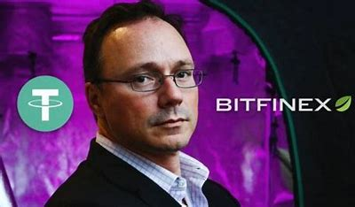
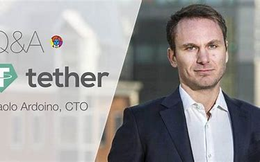

Cryptocurrency Rankings
Welcome to the Cryptocurrency Rankings page. Explore the latest rankings and trends in the world of cryptocurrencies.
Welcome to the Cryptocurrency Rankings page. Explore the latest rankings and trends in the world of cryptocurrencies.
Discover our product converter tool, allowing you to easily convert between different product units. Try it now!
DECEMBER 2023
Published by CurrencEase Hostorical Association
Bitcoin is the first cryptocurreny that was invented in 2008 by Satoshi Nakamoto. Later that year, on 31 October, a link to a paper authored by Satoshi Nakamoto titled Bitcoin: A Peer-to-Peer Electronic Cash System was posted to a cryptography mailing list. This paper detailed methods of using a peer-to-peer network to generate what was described as "a system for electronic transactions without relying on trust". It was introduced in 2009 with an original price of 0$. Its price jumped from 0.1$ to 0.2$ on October 26, 2010. At the end of 2010 year, its price became 0.3$. One of the first supporters, adopters, contributors to bitcoin and receiver of the first bitcoin transaction was programmer Hal Finney. Finney downloaded the bitcoin software the day it was released, and received 10 bitcoins from Nakamoto in the world's first bitcoin transaction on 12 January 2009. Other early supporters were Wei Dai, creator of bitcoin predecessor b-money, and Nick Szabo, creator of bitcoin predecessor bit gold. In the early days, Nakamoto is estimated to have mined 1 million bitcoins. Before disappearing from any involvement in bitcoin, Nakamoto in a sense handed over the reins to developer Gavin Andresen, who then became the bitcoin lead developer at the Bitcoin Foundation, the 'anarchic' bitcoin community's closest thing to an official public face.
The first notable retail transaction involving physical goods was paid on May 22, 2010, by exchanging 10,000 mined BTC for two pizzas delivered from a local pizza restaurant in Florida, marking May 22 as the Bitcoin Pizza Day for crypto-fans. At the time, a transaction's value was typically negotiated on the Bitcoin forum. On 6 August 2010, a major vulnerability in the bitcoin protocol was spotted. While the protocol did verify that a transaction's outputs never exceeded its inputs, a transaction whose outputs summed to more than 264 would overflow, permitting the transaction author to create arbitrary amounts of bitcoin. On 15 August, the vulnerability was exploited; a single transaction spent 0.5 bitcoin to send just over 92 billion bitcoins 263 to each of two different addresses on the network. Within hours, the transaction was spotted, the bug was fixed, and the blockchain was forked by miners using an updated version of the bitcoin protocol. Since the blockchain was forked below the problematic transaction, the transaction no longer appears in the blockchain used by the Bitcoin network today. This was the only major security flaw found and exploited in bitcoin's history
Based on bitcoin's open-source code, other cryptocurrencies started to emerge. The Electronic Frontier Foundation, a non-profit group, started accepting bitcoins in January 2011, then stopped accepting them in June 2011, citing concerns about a lack of legal precedent about new currency systems. The EFF's decision was reversed on 17 May 2013 when they resumed accepting bitcoin. In May 2011, bitcoin payment processor, BitPay was founded to provide mobile checkout services to companies wanting to accept bitcoins as a form of payment. In June 2011, WikiLeaks and other organizations began to accept bitcoins for donations.
In January 2012, bitcoin was featured as the main subject within a fictionalized trial on the CBS legal drama The Good Wife in the third-season episode "Bitcoin for Dummies". The host of CNBC's Mad Money, Jim Cramer, played himself in a courtroom scene where he testifies that he does not consider bitcoin a true currency, saying, "There's no central bank to regulate it; it's digital and functions completely peer to peer". In September 2012, the Bitcoin Foundation was launched to "accelerate the global growth of bitcoin through standardization, protection, and promotion of the open source protocol". The founders were Gavin Andresen, Jon Matonis, Mark Karpelès, Charlie Shrem, and Peter Vessenes. In October 2012, BitPay reported having over 1,000 merchants accepting bitcoin under its payment processing service. In November 2012, WordPress started accepting bitcoins.
In February 2013, the exchange Coinbase reported selling US$1 million worth of bitcoins in a single month at over $22 per bitcoin. The Internet Archive announced that it was ready to accept donations as bitcoins and that it intends to give employees the option to receive portions of their salaries in bitcoin currency. In Charles Stross's 2013 science fiction novel Neptune's Brood, the universal interstellar payment system is known as "bitcoin" and operates using cryptography. Stross later blogged that the reference was intentional, saying "I wrote Neptune's Brood in 2011. Bitcoin was obscure back then, and I figured had just enough name recognition to be a useful term for an interstellar currency: it'd clue people in that it was a networked digital currency." In March, the bitcoin transaction log, called the blockchain, temporarily split into two independent chains with differing rules on how transactions were accepted. For six hours two bitcoin networks operated at the same time, each with its own version of the transaction history. The core developers called for a temporary halt to transactions, sparking a sharp sell-off. Normal operation was restored when the majority of the network downgraded to version 0.7 of the bitcoin software. The Mt. Gox exchange briefly halted bitcoin deposits and the exchange rate briefly dipped by 23% to $37 as the event occurred before recovering to previous level of approximately $48 in the following hours. In the US, the Financial Crimes Enforcement Network (FinCEN) established regulatory guidelines for "decentralized virtual currencies" such as bitcoin, classifying American bitcoin miners who sell their generated bitcoins as Money Service Businesses (or MSBs), that may be subject to registration and other legal obligations. In April, payment processors BitInstant and Mt. Gox experienced processing delays due to insufficient capacity resulting in the bitcoin exchange rate dropping from $266 to $76 before returning to $160 within six hours. Bitcoin gained greater recognition when services such as OkCupid and Foodler began accepting it for payment. In April 2013, Eric Posner, a law professor at the University of Chicago, stated that "a real Ponzi scheme takes fraud; bitcoin, by contrast, seems more like a collective delusion." On 15 May 2013, the US authorities seized accounts associated with Mt. Gox after discovering that it had not registered as a money transmitter with FinCEN in the US. On 17 May 2013, it was reported that BitInstant processed approximately 30 percent of the money going into and out of bitcoin, and in April alone facilitated 30,000 transactions, On 23 June 2013, it was reported that the US Drug Enforcement Administration listed 11.02 bitcoins as a seized asset in a United States Department of Justice seizure notice pursuant to 21 U.S.C. § 881. This was the first time a government agency was reported to have seized bitcoin. In July 2013, a project began in Kenya linking bitcoin with M-Pesa, a popular mobile payments system, in an experiment designed to spur innovative payments in Africa. During the same month the Foreign Exchange Administration and Policy Department in Thailand stated that bitcoin lacks any legal framework and would therefore be illegal, which effectively banned trading on bitcoin exchanges in the country. On 6 August 2013, Federal Judge Amos Mazzant of the Eastern District of Texas of the Fifth Circuit ruled that bitcoins are "a currency or a form of money" (specifically securities as defined by Federal Securities Laws), and as such were subject to the court's jurisdiction, and Germany's Finance Ministry subsumed bitcoins under the term "unit of account" – a financial instrument – though not as e-money or a functional currency, a classification nonetheless having legal and tax implications. In September 2013, Chinese Govt. banned financial institution from trading in Bitcoin fearing a risk of money laundering. In October 2013, the FBI seized roughly 26,000 BTC from website Silk Road during the arrest of alleged owner Ross William Ulbricht. Two companies, Robocoin and Bitcoiniacs launched the world's first bitcoin ATM on 29 October 2013 in Vancouver, BC, Canada, allowing clients to sell or purchase bitcoin currency at a downtown coffee shop. Chinese internet giant Baidu had allowed clients of website security services to pay with bitcoins. In November 2013, the University of Nicosia announced that it would be accepting bitcoin as payment for tuition fees, with the university's chief financial officer calling it the "gold of tomorrow". During November 2013, the China-based bitcoin exchange BTC China overtook the Japan-based Mt. Gox and the Europe-based Bitstamp to become the largest bitcoin trading exchange by trade volume. In December 2013, Overstock.com announced plans to accept bitcoin in the second half of 2014. On 5 December 2013, the People's Bank of China prohibited Chinese financial institutions from using bitcoins. After the announcement, the value of bitcoins dropped, and Baidu no longer accepted bitcoins for certain services. Buying real-world goods with any virtual currency had been illegal in China since at least 2009. On 4 December 2013, Alan Greenspan referred to it as a "bubble".
In January 2014, Zynga announced it was testing bitcoin for purchasing in-game assets in seven of its games. That same month, The D Las Vegas Casino Hotel and Golden Gate Hotel & Casino properties in downtown Las Vegas announced they would also begin accepting bitcoin, according to an article by USA Today. The article also stated the currency would be accepted in five locations, including the front desk and certain restaurants. The network rate exceeded 10 petahash/sec. TigerDirect and Overstock.com started accepting bitcoin. The same month, an operator of a U.S. bitcoin exchange, Robert Faiella better known as Charlie Shrem, was arrested for money laundering. In early February 2014, one of the largest bitcoin exchanges, Mt. Gox, suspended withdrawals citing technical issues. By the end of the month, Mt. Gox had filed for bankruptcy protection in Japan amid reports that 744,000 bitcoins had been stolen. Months before the filing, the popularity of Mt. Gox had waned as users experienced difficulties withdrawing funds. In June 2014, the network exceeded 100 petahash/sec. On 18 June 2014, it was announced that bitcoin payment service provider BitPay would become the new sponsor of St. Petersburg Bowl under a two-year deal, renamed the Bitcoin St. Petersburg Bowl. Bitcoin was to be accepted for ticket and concession sales at the game as part of the sponsorship, and the sponsorship itself was also paid for using bitcoin. In July 2014, Newegg and Dell started accepting bitcoin. In September 2014, TeraExchange, LLC, received approval from the U.S.Commodity Futures Trading Commission "CFTC" to begin listing an over-the-counter swap product based on the price of a bitcoin. The CFTC swap product approval marks the first time a U.S. regulatory agency approved a bitcoin financial product. In December 2014, Microsoft began to accept bitcoin to buy Xbox games and Windows software. In 2014, several light-hearted songs celebrating bitcoin such as the "Ode to Satoshi" were released. A documentary film, The Rise and Rise of Bitcoin, was released in 2014, featuring interviews with bitcoin users such as a computer programmer and a drug dealer. On 13 March 2014, Warren Buffett called bitcoin a "mirage".
In January 2015, Coinbase raised US$75 million as part of a Series C funding round, smashing the previous record for a bitcoin company. Less than one year after the collapse of Mt. Gox, United Kingdom-based exchange Bitstamp announced that their exchange would be taken offline while they investigate a hack which resulted in about 19,000 bitcoins (equivalent to roughly US$5 million at that time) being stolen from their hot wallet. The exchange remained offline for several days amid speculation that customers had lost their funds. Bitstamp resumed trading on 9 January after increasing security measures and assuring customers that their account balances would not be impacted. In February 2015, the number of merchants accepting bitcoin exceeded 100,000. In 2015, the MAK (Museum of Applied Arts, Vienna) became the first museum to acquire art using bitcoin, when it purchased the screensaver "Event listeners" of van den Dorpel. In September 2015, the establishment of the peer-reviewed academic journal Ledger (ISSN 2379-5980) was announced. It covers studies of cryptocurrencies and related technologies, and is published by the University of Pittsburgh. The journal encourages authors to digitally sign a file hash of submitted papers, which will then be timestamped into the bitcoin blockchain. Authors are also asked to include a personal bitcoin address in the first page of their papers. In October 2015, a proposal was submitted to the Unicode Consortium to add a code point for the bitcoin symbol.
In January 2016, the network rate exceeded 1 exahash/sec. In March 2016, the Cabinet of Japan recognized virtual currencies like bitcoin as having a function similar to real money. Bidorbuy, the largest South African online marketplace, launched bitcoin payments for both buyers and sellers. In July 2016, researchers published a paper showing that by November 2013 bitcoin commerce was no longer driven by "sin" activities but instead by legitimate enterprises. In July 2016, the CheckSequenceVerify soft fork activated. In August 2016, a major bitcoin exchange, Bitfinex, was hacked and nearly 120,000 BTC (around $60m) was stolen. In November 2016, the Swiss Railway operator SBB (CFF) upgraded all their automated ticket machines so that bitcoin could be bought from them using the scanner on the ticket machine to scan the bitcoin address on a phone app. Bitcoin generates more academic interest year after year; the number of Google Scholar articles published mentioning bitcoin grew from 83 in 2009, to 424 in 2012, and 3580 in 2016. Also, the academic journal Ledger published its first issue. It is edited by Peter Rizun.
The number of businesses accepting bitcoin continued to increase. In January 2017, NHK reported the number of online stores accepting bitcoin in Japan had increased 4.6 times over the past year. BitPay CEO Stephen Pair declared the company's transaction rate grew 3× from January 2016 to February 2017, and explained usage of bitcoin is growing in B2B supply chain payments. Bitcoin gains more legitimacy among lawmakers and legacy financial companies. For example, Japan passed a law to accept bitcoin as a legal payment method, and Russia has announced that it will legalize the use of cryptocurrencies such as bitcoin. Exchange trading volumes continue to increase. For the 6-month period ending March 2017, Mexican exchange Bitso saw trading volume increase 1500%. Between January and May 2017 Poloniex saw an increase of more than 600% active traders online and regularly processed 640% more transactions. In June 2017, the bitcoin symbol was encoded in Unicode version 10.0 at position U+20BF (₿) in the Currency Symbols block. Up until July 2017, bitcoin users maintained a common set of rules for the cryptocurrency. On 1 August 2017 bitcoin split into two derivative digital currencies, the bitcoin (BTC) chain with 1 MB blocksize limit and the Bitcoin Cash (BCH) chain with 8 MB blocksize limit. The split has been called the Bitcoin Cash hard fork. On 6 December 2017 the software marketplace Steam announced that it would no longer accept bitcoin as payment for its products, citing slow transactions speeds, price volatility, and high fees for transactions.
On 22 January 2018, South Korea brought in a regulation that requires all the bitcoin traders to reveal their identity, thus putting a ban on anonymous trading of bitcoins. On 24 January 2018, the online payment firm Stripe announced that it would phase out its support for bitcoin payments by late April 2018, citing declining demand, rising fees and longer transaction times as the reasons. On 25 January 2018, George Soros referred to bitcoin as a bubble. In October 2018, Nelson Saiers installed a 9-foot inflatable rat covered with bitcoin references and code in front of the Federal Reserve as a homage to Satoshi Nakamoto and protests in New York City. In May 2018, the United States Department of Justice investigated bitcoin traders for possible price manipulation, focusing on practices like spoofing and wash trades. The investigation, which involved key exchanges like Bitstamp, Coinbase, and Kraken, led to subpoenas from the Commodity Futures Trading Commission after these exchanges failed to comply with information requests.
The dawn of 2019 found Bitcoin trading below the $4000 mark after a difficult year for the global crypto market. It climbed to just over $12,000 in July before.
On 2 July 2020, the Indian company 69 Shares started to quote a set of bitcoin exchange-traded products (ETP) on the Xetra trading system of the Deutsche Boerse. On 1 September 2020, the Wiener Börse listed its first 21 titles denominated in cryptocurrencies like bitcoin, including the services of real-time quotation and securities settlement. On 3 September 2020, the Frankfurt Stock Exchange admitted in its Regulated Market the quotation of the first bitcoin exchange-traded note (ETN), centrally cleared via Eurex Clearing. In October 2020, PayPal announced that it would allow its users to buy and sell bitcoin on its platform, although not to deposit or withdraw bitcoins.
On 19 January 2021, Elon Musk placed the handle #Bitcoin in his Twitter profile, tweeting "In retrospect, it was inevitable", which caused the price to briefly rise about $5,000 in an hour to $37,299. On 25 January 2021, Microstrategy announced that it continued to buy bitcoin and as of the same date it had holdings of ₿70,784 worth $2.38 billion. On 8 February 2021 Tesla's announcement of a bitcoin purchase of US$1.5 billion and the plan to start accepting bitcoin as payment for vehicles, pushed the bitcoin price to $44,141. On 18 February 2021, Elon Musk stated that "owning bitcoin was only a little better than holding conventional cash, but that the slight difference made it a better asset to hold". After 49 days of accepting the digital currency, Tesla reversed course on 12 May 2021, saying they would no longer take bitcoin due to concerns that "mining" the cryptocurrency was contributing to the consumption of fossil fuels and climate change. The decision resulted in the price of bitcoin dropping around 12% on 13 May. During a July bitcoin conference, Musk suggested Tesla could possibly help bitcoin miners switch to renewable energy in the future and also stated at the same conference that if bitcoin mining reaches, and trends above 50 percent renewable energy usage, that "Tesla would resume accepting bitcoin." The price for bitcoin rose after this announcement. From February 2021, the Swiss canton of Zug allows for tax payments in bitcoin and other cryptocurrencies. On 1 June 2021, El Salvador President Nayib Bukele announced his plans to adopt bitcoin as legal tender; this would render El Salvador the world's first country to do so. On June 7, 2021, United States Justice Department recovered $2.3 million worth of bitcoin paid by Colonial Pipeline to a criminal cyber group in cyber-security ransom. On 8 June 2021, at the initiative of the president, pro-government deputies in the Legislative Assembly of El Salvador voted legislation—Ley Bitcoin or the Bitcoin Law—to make Bitcoin legal tender in the country alongside the US Dollar.
Global economic factors that stemmed from Russia's War in Ukraine negatively affected the price of Bitcoin. On April 22, 2022, its price fell back down below $40,000. It further dropped to as low as $26,970 in May after the collapse of Terra-Luna and its sister stablecoin, UST, in addition to a shedding of tech stocks. On 18 June, Bitcoin dropped below $18,000, to trade at levels beneath its 2017 highs. In May 2022, following a vote by Wikipedia editors the previous month, the Wikimedia Foundation announced it would stop accepting donations in bitcoin or other cryptocurrencies—eight years after it had first started taking contributions in bitcoin.
In 2023, ordinals, non-fungible tokens (NFTs) on Bitcoin, went live.
Ethereum was conceived in 2013 by programmer Vitalik Buterin. Additional founders of Ethereum included Gavin Wood, Charles Hoskinson, Anthony Di Iorio, and Joseph Lubin. In 2014, development work began and was crowdfunded, and the network went live on 30 July 2015.
Ethereum was initially described in late 2013 in a white paper by Vitalik Buterin, a programmer and co-founder of Bitcoin Magazine, that described a way to build decentralized applications. Buterin argued to the Bitcoin Core developers that Bitcoin and blockchain technology could benefit from other applications besides money and that it needed a more robust language for application development:88 that could lead to attaching real-world assets, such as stocks and property, to the blockchain. In 2013, Buterin briefly worked with eToro CEO Yoni Assia on the Colored Coins project and drafted its white paper outlining additional use cases for blockchain technology. However, after failing to gain agreement on how the project should proceed, he proposed the development of a new platform with a more robust scripting language—a Turing-complete programming language—that would eventually become Ethereum. Ethereum was announced at the North American Bitcoin Conference in Miami, in January 2014. During the conference, Gavin Wood, Charles Hoskinson, and Anthony Di Iorio (who financed the project) rented a house in Miami with Buterin at which they could develop a fuller sense of what Ethereum might become. Di Iorio invited friend Joseph Lubin, who invited reporter Morgen Peck, to bear witness. Peck subsequently wrote about the experience in Wired. Six months later the founders met again in Zug, Switzerland, where Buterin told the founders that the project would proceed as a non-profit. Hoskinson left the project at that time and soon after founded IOHK, a blockchain company responsible for Cardano. Ethereum has an unusually long list of founders. Anthony Di Iorio wrote: "Ethereum was founded by Vitalik Buterin, Myself, Charles Hoskinson, Mihai Alisie & Amir Chetrit (the initial 5) in December 2013. Joseph Lubin, Gavin Wood, & Jeffrey Wilcke were added in early 2014 as founders." Buterin chose the name Ethereum after browsing a list of elements from science fiction on Wikipedia. He stated, "I immediately realized that I liked it better than all of the other alternatives that I had seen; I suppose it was that it sounded nice and it had the word 'ether', referring to the hypothetical invisible medium that permeates the universe and allows light to travel." Buterin wanted his platform to be the underlying and imperceptible medium for the applications running on top of it.
Formal development of the software underlying Ethereum began in early 2014 through a Swiss company, Ethereum Switzerland GmbH (EthSuisse). The idea of putting executable smart contracts in the blockchain needed to be specified before it could be implemented in software. This work was done by Gavin Wood, then the chief technology officer, in the Ethereum Yellow Paper that specified the Ethereum Virtual Machine. Subsequently, a Swiss non-profit foundation, the Ethereum Foundation (Stiftung Ethereum), was founded. Development was funded by an online public crowd sale from July to August 2014, in which participants bought the Ethereum value token (ether) with another digital currency, bitcoin. While there was early praise for the technical innovations of Ethereum, questions were also raised about its security and scalability.
Several codenamed prototypes of Ethereum were developed over 18 months in 2014 and 2015 by the Ethereum Foundation as part of their proof-of-concept series. "Olympic" was the last prototype and public beta pre-release. The Olympic network gave users a bug bounty of 25,000 ether for stress-testing the Ethereum blockchain. On 30 July 2015, "Frontier" marked the official launch of the Ethereum platform, and Ethereum created its "genesis block". The genesis block contained 8,893 transactions allocating various amounts of ether to different addresses, and a block reward of 5 ETH. Since the initial launch, Ethereum has undergone a number of planned protocol upgrades, which are important changes affecting the underlying functionality and/or incentive structures of the platform. Protocol upgrades are accomplished by means of a hard fork. In 2016, a decentralized autonomous organization called The DAO—a set of smart contracts developed on the platform—raised a record US$150 million in a crowd sale to fund the project. The DAO was exploited in June 2016 when US$50 million of DAO tokens were stolen by an unknown hacker. The event sparked a debate in the crypto-community about whether Ethereum should perform a contentious "hard fork" to reappropriate the affected funds. The fork resulted in the network splitting into two blockchains: Ethereum with the theft reversed, and Ethereum Classic which continued on the original chain.
In March 2017, various blockchain startups, research groups, and Fortune 500 companies announced the creation of the Enterprise Ethereum Alliance (EEA) with 30 founding members. By May 2017, the nonprofit organization had 116 enterprise members, including ConsenSys, CME Group, Cornell University's research group, Toyota Research Institute, Samsung SDS, Microsoft, Intel, J. P. Morgan, Cooley LLP, Merck KGaA, DTCC, Deloitte, Accenture, Banco Santander, BNY Mellon, ING, and National Bank of Canada. By July 2017, there were over 150 members in the alliance, including MasterCard, Cisco Systems, Sberbank, and Scotiabank.
In 2017, CryptoKitties, the blockchain game and decentralized application (dApp) featuring digital cat artwork as NFTs, was launched on the Ethereum network. In cultivating popularity with users and collectors, it gained notable mainstream media attention providing significant exposure to Ethereum in the process. It was considered the most popular smart contract in use on the network but it also highlighted concerns over Ethereum's scalability due to the game's substantial consumption of network capacity at the time. In January 2018, a community-driven paper (an EIP, "Ethereum Improvement Proposal") under the leadership of civic hacker and lead author William Entriken was published, called ERC-721: Non-Fungible Token Standard. It introduced ERC-721, the first official NFT standard on Ethereum. This standardization was a milestone for Ethereum in pioneering the foundation of the multi-billion dollar digital collectibles eco-system.
By January 2018, ether was the second-largest cryptocurrency in terms of market capitalization, behind bitcoin. As of 2021, it maintained that relative position. In 2019, Ethereum Foundation employee Virgil Griffith was arrested by the US government for presenting at a blockchain conference in North Korea. He would later plead guilty to one count of conspiring to violate the International Emergency Economic Powers Act in 2021. In March 2021, Visa Inc. announced that it began settling stablecoin transactions using Ethereum. In April 2021, JP Morgan Chase, UBS, and MasterCard announced that they were investing US$65 million into ConsenSys, a software development firm that builds Ethereum-related infrastructure. There were two network upgrades in 2021. The first was "Berlin", implemented on 14 April 2021. The second was "London", which took effect on 5 August. The London upgrade included Ethereum Improvement Proposal ("EIP") 1559, a mechanism for reducing transaction fee volatility. The mechanism causes a portion of the ether paid in transaction fees for each block to be destroyed rather than given to the block proposer, reducing the inflation rate of ether and potentially resulting in periods of deflation. On 27 August 2021, the blockchain experienced a brief fork that was the result of clients running different incompatible software versions.
Ethereum 2.0 (Eth2) was a set of three or more upgrades, also known as "phases", meant to transition the network's consensus mechanism to proof-of-stake, and to scale the network's transaction throughput with execution sharding and an improved EVM architecture. The switch from proof-of-work to proof-of-stake on 15 September 2022 has cut Ethereum's energy usage by 99%. However, the impact this has on global energy consumption and climate change may be limited since the computers previously used for mining ether may be used to mine other cryptocurrencies that are energy-intensive. As of April 2023, 18.2 million ETH ($34.6 billion) was locked in the Ethereum 2.0 staking deposit contract.
In 2012, J.R. Willett published a whitepaper which described the possibility of building new cryptocurrencies on top of the Bitcoin blockchain. Willett went on to help implement this idea in the cryptocurrency Mastercoin, which had an associated Mastercoin Foundation (later renamed the Omni Foundation) to promote the use of this new "second layer".19[non-primary source needed] The Mastercoin protocol became the technological foundation of the Tether cryptocurrency, and one of the original members of Mastercoin Foundation. Brock Pierce became a co-founder of Tether. and Tether founder, Craig Sellars, became the CTO of the Mastercoin Foundation.[citation needed] The precursor to Tether, originally named "Realcoin", was announced in July 2014 by co-founders Brock Pierce, Reeve Collins, and Craig Sellars as a Santa Monica-based startup. The first tokens were issued on 6 October 2014, on the Bitcoin blockchain. This was done by using the Omni Layer Protocol. On 20 November 2014, Tether CEO Reeve Collins announced the project was being renamed to "Tether".[citation needed] The company also announced it was entering private beta, which supported a "Tether+ token" for three currencies: USTether (US+) for United States dollars, EuroTether (EU+) for euros and YenTether (JP+) for Japanese yen. Tether falsely claimed at launch that "every Tether+ token is backed 100% by its original currency, and can be redeemed at any time with no exposure to exchange risk", although this was not true at the time and remains false. The company's website states that it is incorporated in Hong Kong with offices in Switzerland, without giving details, and has never submitted to an independent audit.
In January 2015, the cryptocurrency exchange Bitfinex enabled trading of Tether on their platform.  While representatives from Tether and Bitfinex say that the two are separate, the Paradise Papers leaks in November 2017 named Bitfinex officials Philip Potter and Giancarlo Devasini as responsible for setting up Tether Holdings Limited in the British Virgin Islands in 2014. A spokesperson for Bitfinex and Tether has said that the CEO of both firms is Jan Ludovicus van der Velde. According to Tether's website, the Hong Kong-based Tether Limited is a fully owned subsidiary of Tether Holdings Limited. Bitfinex is one of the largest Bitcoin exchanges by volume in the world. For a while, Tether was processing US dollar transactions through Taiwanese banks which, in turn, sent the money through the bank Wells Fargo to allow the funds to move outside Taiwan. Tether announced that on 18 April 2017, these international transfers had been blocked. Along with Bitfinex, Tether filed suit against Wells Fargo in the U.S. District Court for the Northern District of California. The lawsuit was withdrawn a week later.[citation needed] Tether issues token on Bitcoin (Omni and Liquid Protocol), Ethereum, EOS, Tron, Algorand, SLP, and -OMG Network blockchains. Currently, there are a total of five distinct Tether tokens: United States dollar tether on Bitcoin's Omni layer, euro tether on Bitcoin's Omni layer, United States dollar tether as an ERC-20 token, and euro tether as an ERC-20 token, and added in 2020 United States dollar tether as a TRC-20 token on the TRON network.[citation needed]
From January 2017 to September 2018, the amount of tethers outstanding grew from about $10 million to about $2.8 billion. In early 2018 Tether accounted for about 10% of the trading volume of Bitcoin, but during the summer of 2018 it accounted for up to 80% of Bitcoin volume. More than $500 million of Tether was issued in August 2018. On 15 October 2018 the tether price briefly fell to $0.88 due to the perceived credit risk as traders on Bitfinex exchanged tether for Bitcoin, driving up the price of Bitcoin. The Wall Street Journal reported that in late 2018, Tether Holdings Ltd co-owner Stephen Moore discussed efforts by a major Tether trader in China to “circumvent the banking system by providing fake sales invoices and contracts for each deposit and withdrawal.†The report quoted a Moore email in which he admitted signing these fake invoices and contracts but said he “would not want to argue any of the above in a potential fraud/money laundering case.†Tether released a response calling the Journal report “wholly inaccurate and misleading†but didn't cite any specific inaccuracies.
In 2019, Tether surpassed Bitcoin in trading volume with the highest daily and monthly trading volume of any cryptocurrency on the market.  In October 2023, Paolo Ardoino, the chief technology officer for Tether, was promoted to CEO. He will lead the company starting in December 2023, succeeding current CEO Jean-Louis van der Velde. In October 2023, the Wall Street Journal reported that Tether has been increasingly showing up in investigations tied to money laundering, terror financing and sanctions evasion. The report alleges that Tether appears to have been used in financing Hamas, paying Chinese fentanyl suppliers, funding the North Korean nuclear program and buying sanctioned Venezuelan oil for sanctioned Russian oligarchs. In response, the company published a blog post denying inadequate customer due diligence and screening practices, and describing how they have aided governments with criminal investigations, helping freeze a total of $835 million in assets linked to theft.